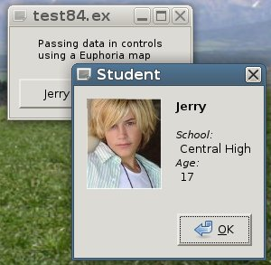
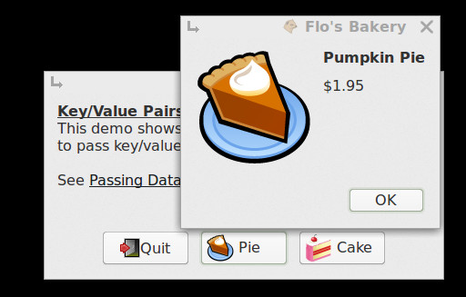
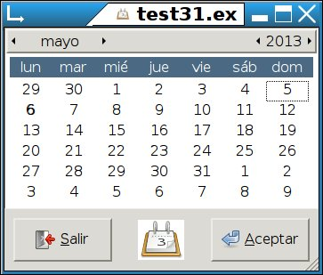

Note that you can use names to refer to controls, rather than handles,
only if you give the widget its own individual name.
(When using Glade, a name will be assigned automatically, but can be changed.)


The basics of building a GTK program, including why it is superior to other GUI schemes.
From the GTK docs:"A GTK+ user interface is constructed by nesting widgets inside widgets. Container widgets are the inner nodes in the resulting tree of widgets: they contain other widgets. So, for example, you might have a GtkWindow containing a GtkFrame containing a GtkLabel. If you wanted an image instead of a textual label inside the frame, you might replace the GtkLabel widget with a GtkImage widget.
There are two major kinds of container widgets in GTK+. Both are subclasses of the abstract GtkContainer base class. The first type of container widget has a single child widget and derives from GtkBin. These containers are decorators, which add some kind of functionality to the child. For example, a GtkButton makes its child into a clickable button; a GtkFrame draws a frame around its child and a GtkWindow places its child widget inside a top-level window.
The second type of container can have more than one child; its purpose is to manage layout. This means that these containers assign sizes and positions to their children. For example, a GtkBox arranges its children in a horizontal [or vertical] row, and a GtkGrid arranges the widgets it contains in a two-dimensional grid."
The importance of this to the programmer is that GTK does not expect you to specify the position and size of each widget as is required when programming for Windows™. This means less work for you.
Quote:"Note the inherent danger of setting any fixed size - themes, translations into other languages, different fonts, and user action can all change the appropriate size for a given widget. So, it's basically impossible to hardcode a size that will always be correct."
GTK handles these things automatically, adjusting things 'on-the-fly', as the user resizes windows, changes fonts, etc., which makes your programs more user-friendly. Everybody wins!
include GtkEngine.e --[1] include the EuGTK wrapper;
constant --[2] create the widgets, and set some properties;
win = create(GtkWindow,"border width=10,icon=face-laugh,$destroy=Quit"),
pan = create(GtkBox,"orientation=vertical"), -- container for the window contents
box = create(GtkButtonBox), -- no params needed, default is horizontal
btn = create(GtkButton,"gtk-quit","Quit"), when clicked, call built-in Quit() function
lbl = create(GtkLabel,"color=blue") -- can specify fonts, sizes, etc. here
set(lbl,"markup", --[3] style the text if required, using basic html;
"<span color='red'><big>Hello World!</big></span>\n\n" &
"This demos a simple window with\na label and a quit button.\n")
add(win,pan) --[4] add widgets to containers;
add(pan,lbl) -- add to container,
add(box,btn).-- sharing space equally
pack(pan,-box) -- pack means use only minimum required space
-- neg. sign means pack at end/bottom of container
show_all(win) --[5] instantiate the widgets;
main() --[6] enter the main GTK event processing loop;
Key to color codes used in this documentation
Note: I try to use very short (3 or 4 letter) constant names for the widgets wherever possible. This means that the resulting program will be easy to read, free of unnecessary clutter, and therefore easier to maintain!
If you are accustomed to writing programs for Windows™, you'll wonder why there's not a complex IDE to help lay out your GTK program interface. The answer is: Because it's not necessary!
As you can see from the program above, you don't need to specify sizes and positions for GTK controls; GTK takes care of that task for you. Your main job will be writing Euphoria functions, for which a plain old text editor will work just fine!
You do have the option to use Glade to design your program interface if you wish. See Glade.html.
EuGTK allows you to program in a logical object-oriented style. By logical, I mean that only things which deserve being made into objects are treated as such; to be specific, the GtkWidgets. There's no silly requirement to make everything, including strings and integers, into "objects"!
There are only a handful of new keywords to know. You can create nice-looking, functional programs with only these:
You'll find a more complete list of keywords in functions.html
New instances of EuGTK containers and controls (collectively called 'widgets' in GTK) are created by calling the create() function with a class name. These class names are enumerated in GtkEnums.e, and they are the same as those used by the GTK docs. These class names are the ONLY ones you can send to the create() function. Never try numbers or strings. No quotes. Spelling and case counts!
The create() function returns a 'handle' (a.k.a. pointer) to the newly created instance. That handle can (and usually should) be saved in a Euphoria constant for later access:
constant win = create(GtkWindow)
Parameters, if any, which follow the class name vary, and are often optional.
Refer to the demo programs and the GTK docs for details. Also, explore the new, more compact syntax options,
as well as variants, below.
GtkEngine.e maintains a list of created GTK containers and controls, and directs calls from your Euphoria program to the appropriate 'method' (GTK function) based on the type of widget and whether the call is to set or to get one of that widget's properties.
Every GTK widget has a list of properties which can be written to or read from. For example, a window has a title, a border width, a default size, etc.
Widgets which display information or accept input from users have properties such as text for labels and text entry widgets, value for numeric widgets, and active for widgets such as checkboxes and radio buttons.
To find out what properties exist for a given widget, refer to the GTK docs. Remember that widgets inherit properties from ancestor widgets, so if you don't find a property for a given widget, follow the Object Hierarchy links in the GTK docs. As an example, you can select the font, background or text color for a window, but these properties are actually implemented by GtkWindow's ancestor the GtkWidget, whereas border width is actually implemented by the GtkWindow's ancestor GtkContainer. But you don't need to be concerned about this, all you need do is tell the window what to do, and it - or its parents or grandparents - will see that it gets done.
EuGTK keeps track of these ancestor properties for you, but if you don't read the GTK docs, you won't be aware that these properties are available! In many cases you can just use common sense: for example, if it seems reasonable that a window should be able to have a blue background, just try it:
set(win,"background","blue").
The set() function takes a 'handle' to a control, plus a 'property' to be set. Handle is usually an atom as assigned by the create() function, except when you are using Glade to design your interfaces, when you often use the name of the control in string form, e.g. "button1" or "help:window".
'property' is always a string! Following that is one or more parameters. The type and number of parameters requred must be determined by looking at the GTK documentation and the sample programs included here. Some examples:
set(win,"title","My Program")
set(win,"border_width",10) -- param is width in pixels
set(win,"default_size",300,200) -- params are width, height in pixels
Namespaced:
-- when using Glade:
set("help:window","Title","Using EuGTK")
-- when manually coding:
set(help:window,"title","Using EuGTK")
Note that you can use names to refer to controls, rather than handles,
only if you give the widget its own individual name.
(When using Glade, a name will be assigned automatically, but can be changed.)
Example:
constant win = create(GtkWindow,"name=Main Window,size=400x300")
In the above line, you have named this window, and so can refer to it as
"Main Window" in future set() or get() calls. Sometimes this can result in more-readable code.
Naming conrols is also necessary if you are going to use .ini type files to store settings and preferences
between runs of your program.
If you supply too many parameters to the set() routine, like:
set(win,"title","My Program","Isn't it great?",1,Foo,,99)
that won't usually cause any problem; the excess parameters are just discarded.
You'll get an error message if you get carried away and try to send more than 10.
Too few parameters may cause problems, if not crashes, because unfilled values default to zero. No error message can help in this case, since a value of 0 is in many cases valid.
Mismatched parameter types - sending a string where an atom or integer is expected, or vice-versa - will sometimes result in an unavoidable crash (segfault). Again, read the GTK docs!
The get() function takes a 'handle' to the control, plus a 'property' to be looked up. Handle is usually an atom constant, except when using Glade to design your interface, in which case it is usually a string. And 'property' is always a string! Some examples:
get(win,"title") -- returns a string if a title was set, 0 otherwise
get(win,"border_width") -- returns an integer (pixels), 0 if unset
get(win,"default_size") -- returns a sequence {x,y} e.g: {300,200} or {-1,-1} if unset
Namespaced:
-- when using Glade:
get("prefs:spinbutton1","value") -- returns an atom or integer
-- when using manual coding:
get(prefs:spinbutton1,"value")
Sending the wrong number of parameters to the get() function will
very likely cause problems! Sometimes a machine-level exception (signal 11).
Fortunately, this is easy to avoid, as there normally AREN'T ANY
parameters to 'get', other than the handle and the property name.
A few very frequently used functions have simpler 'shorthand' ways to call them:
| Function | Parameters | Shorthand | Parameters |
|---|---|---|---|
| set(x,"add",z) |
For functions on the left, x and z must be atoms (a widget handle) or a widget name in string form |
add(x,z) | For shorthand notation, x must be an atom (a widget handle) or a widget name z can be a handle or a {list} of handles or names |
| set(x,"show") | show(z) | ||
| set(x,"show_all") | show_all(z) | ||
| set(x,"hide") | hide(z) | ||
| set(x,"hide all") | hide_all(z) |
These shortcut methods not only save a bit of typing, but more importantly, allow you to send {lists} of items, rather than calling the routine over and over, once for each item. {lists} are simply sequences of one or more handles or names of widgets. For example:
add(panel,{img1,tv1,btn1,"About:button"})
or
add(panel,x) -- x can be a {list} of handles to a number of objects
or
add(panel,x[1..5]) -- you can send slices of {lists} as well
GTK provides two 'pack' methods: pack_start and pack_end, which are identical except for direction. The original calls are still there, but for added convenience, I've also provided pack, which uses the - (neg.) sign to indicate pack at end. This may be helpful when packing several items in one call.
pack(panel,btnBox) -- same as pack_start -- (top to bottom for vert. containers, left to right for horiz.) -- or pack(panel,-btnBox) -- same as pack_end: -- this item will go at the bottom of a vertical container, -- or to the far right of a horizontal container.
There are some GTK widgets which have multiple ways to create them. A GtkImage, for example, might be created from:
EuGTK tries to figure out which you want by examining the params (if any) you send to the create() function:
constant img = create(GtkImage) --it seems you want an empty container which can hold an image to be set later. constant img = create(GtkImage,"~/demos/thumbnails/BabyTux.jpg") -- looks like you want to create this from the file named, if such file exists. -- Note: cannonical_path() is automatically called to convert the filename/path to a usable form. constant img = create(GtkImage,"gtk-ok",GTK_ICON_SIZE_DIALOG) -- looks like you want a stock image, in the size given. -- Note: any name beginning with "gtk-" is considered to be a stock item constant img = create(GtkImage,"face-smile",GTK_ICON_SIZE_DIALOG) -- you want an icon, as named, from the current icon theme, in the size specified. -- size can be either one of the GTK_ICON_SIZE_ enums, or can be a pixel value, -- usually between 16 and 256. constant pix = create(GdkPixbuf,"~/demos/thumbnails/mongoose.png",80,80,TRUE) constant img = create(GtkImage,pix) -- by creating a pixbuf from the file, you can specify a size for the image, -- plus, you have a static pixbuf object which can be re-used.
It should be obvious, but just to be clear, GTK programs, like Windows™ programs, Apple™ programs, and almost every other computer program written in the last few decades, are event driven. If you aren't sure what that means, find out before you begin designing your nifty new program.
Your program will need to respond to user actions (events). The various events emit signals, for example, clicking on a button emits a "clicked" signal. Your job is to connect the widget's signal to the appropriate Euphoria function.
connect(win,"destroy","Quit") -- Always do this for the main window!
Where win is the handle, "destroy" (always a string) is a signal
(the name of an event), and "Quit" is what to do in that event. The example above will
call the function Quit() when the program's main window is destroyed.
Quit() - a function exported by GtkEngine.e - then shuts down the GTK engine and frees memory it has allocated.
Quit() is one of a very few built-in EuGTK functions you will need to connect to. Most other connections will be made to Euphoria functions YOU write. Any Euphoria function used for this purpose must be:
You usually do not have to write a separate line of code to connect a widget to a function. The most commonly-used widgets have a convenient way to make that connection at the time the widget is created, which leads to cleaner and easier to maintain code:
(A) constant btn1 = create(GtkButton,"gtk-ok","Foo",42)
(B) constant btn1 = create(GtkButton,"gtk-ok","Foo","Hello World!")
(C) constant foo = call_back(routine_id("Foo")) -- save callback;
constant btn1 = create(GtkButton,"gtk-ok",foo,"Hello World!") -- connect callback;
(D)constant btn1 = create(GtkButton,"gtk-ok",_("Foo"),bar)
The _("Foo") directly above is a built-in function which allows you to declare and call local functions, rather than global. It works better than call_back(routine_id()), since it can 'look forward' to find functions which are defined later in your code, allowing a cleaner program structure.
Thanks to Greg Haberek for this useful addition!
In each of the calls above, you are making a new button with the stock OK image, connecting its default signal (which is 'clicked', in the case of a button) to call your Euphoria function Foo(), and optionally attaching something as data to be passed to that function. The data item is always optional, and can contain almost anything you want, including Euphoria sequences, Euphoria routine_id's, text strings, widget handles or names, etc.
See Data passing below for examples of how to pass various data types to your Euphoria functions.
If you use method (A) or (B) then your Euphoria function declaration could look like this:
--------------------------------------------------------------
global function Foo(atom ctl, object data)
--------------------------------------------------------------
If you use method (C) or (D) then you can declare your Euphoria functions as local functions, not global:
----------------------------------------------------------- function Foo(atom ctl, object data) -----------------------------------------------------------
The ctl parameter will be filled in with the handle of the control which dispatched the call, and data will contain the data attached to that control, or null if no data was provided.
Caution!
If you compile a program which uses method (C) or (D) to link to functions, it may run in interpreted, bound, and shrouded modes correctly, and compile without error, but the function won't be called when the button is clicked!It's best to use global functions and style (A) or (B) if you're planning to compile your work.
You can also connect signals to controls by typing a separate line:
(1) connect(btn1,"clicked","Foo",42) -- global function
(2) connect(btn1,"clicked",call_back(routine_id("Foo")),"Hello")
(3) connect(btn1,"clicked",_("Foo"),42) -- local function
(4) constant foo = call_back(routine_id("Foo")) -- save callback;
connect(btn1,"clicked",foo,"Hello") -- use callback;
You might use one of these methods instead of the simpler one
if you want to connect a signal other than the default, or if there is no default signal provided for
that control. See GTK docs for appropriate signal names, and GtkEngine.e for the implemented defaults
(around line 495 in the create() function).
Different controls can pass different types and number of parameters to your Euphoria "handler" functions when activated, so be sure to check the GTK docs for the particular widget/signal you are using. The GTK docs usually show a prototype of an appropriate signal handler.
Often, your Euphoria functions can ignore the parameters that GTK passes to them. If you do not need to access these parameters, just don't bother to declare them!
Note that you can connect more than one signal and/or function to a control.
A common way to use this is to trap your main window's "delete-event" signal first, calling a routine that saves your work if necessary, then allowing (or not) the "destroy" event to call the "Quit" function to end the program.
constant win = create(GtkWindow)
connect(win,"delete-event",_("AreYouSure")) -- this will be called first
connect(win,"destroy","Quit") -- Quit might be called next
-- depending upon value returned by the previous function
-------------------------------------------------
function AreYouSure()
-------------------------------------------------
if dirty then
-- *save my work* code goes here
end if
return Question(win,,"OK to Quit?") != MB_YES
end function
Since you can connect several controls to a single Eu function, your function may need to determine which
control is doing the calling.
As a rule, the first parameter passed to a called Eu function will be the
handle of the control that was activated.
The second parameter is usually the data attached
when the connection was made.
These 'rules' vary on occasion. See the GTK docs for a prototype of the respective callback routine.
Here are two ways to determine which control was activated:
--------------------------------------------
function Foo(atom ctl, atom data)
--------------------------------------------
-- within this function, you might choose to:
Frequently, it is convenient to be able to attach data items to an individual control, which that control will pass to functions it calls when activated. Depending upon the method chosen, the data can be almost anything, from a simple integer to a complex Euphoria sequence containing strings, pointers, routine_id's, and perhaps even images or other GTK 'widgets'.
Often it is enough to simply attach the data to a control's data space, as in the examples below. This is also the cleanest and most readable method.
(1) -- passing an integer value
constant
btn1 = create(GtkButton,"Justin","DisplayAge",17),
btn2 = create(GtkButton,"Jamie","DisplayAge",15)
---------------------------------------------------------------
global function DisplayAge(atom ctl, integer age)
---------------------------------------------------------------
printf(1,"Age = %d\n",age)
Integers are passed and used directly, with no conversion needed.
All other data types are passed as tagged pointers,
and must be 'decoded' by using the unpack() function.
(2) -- passing a float
constant btn1 = create(GtkButton,"gtk-ok",_("Foo"),123.456)
---------------------------------------------------------------
function Foo(atom ctl, object data) -- must be object
---------------------------------------------------------------
atom num = unpack(data)
The unpack() function will return an atom
(3) -- passing a string
constant btn1 = create(GtkButton,"gtk-ok",_("Foo"),"James Brown")
---------------------------------------------------------------
function Foo(atom ctl, object data) -- must be object
---------------------------------------------------------------
data = unpack(data)
The unpack() function will return a string
(4) -- passing a Euphoria function
constant btn1 = create(GtkButton,"gtk-ok",_("Foo"),routine_id("proper"))
----------------------------------------------------------------
function Foo(atom ctl, integer fn)
----------------------------------------------------------------
set(lbl2,"markup",call_func(fn,{"hello world"}))
(5) -- passing a Euphoria sequence {} containing almost any mix of data
constant
btn1 = create(GtkButton,"_Pie",_("Foo"),{"Apple Pie",1.95}),
btn2 = create(GtkButton,"_Cake",_("Foo"),{"Carrot Cake",2.10})
---------------------------------------------------------------
function Foo(atom ctl, object data) -- must be object
---------------------------------------------------------------
data = unpack(data)
Info(win,"Flo's Bakery",
format("Two orders of [1]",data),
format("Price: $[2.2]",data*2))
The unpack() function will return a sequence
Sometimes, the best way to pass multiple data values of varying types might be with Euphoria's map functions. One advantage of this method is that it allows you to access the values by name, rather than by position, as shown in the method above. The disadvantage - verbosity.
object jerry = map:new()
map:put(jerry,"Name","Jerry")
map:put(jerry,"School","Central High")
map:put(jerry,"Age",17)
map:put(jerry,"Pix",create(GdkPixbuf,"~/demos/thumbnails/Jerry.jpg"))
-- above, we store the 'handle' to a picture of
-- Jerry in the map structure.
constant btn1 = create(GtkButton,"Student 1",_("ShowDetails"),jerry)
-- we pass Jerry's mapped data attached as the button's data item

--------------------------------------------
function ShowDetails(atom ctl, atom data)
--------------------------------------------
Info(win,"Student",map:get(data,"Name"),
sprintf("School:\n %s\nAge:\n %d",
{map:get(data,"School"),
map:get(data,"Age")}),,
map:get(data,"Pix"))
-- above, we pass the 'handle'
-- to Jerry's pixmap in the data item,
-- then use it as the dialog image.
Another way is to use each control's "data" space to pass name/value pairs. This is not the same as the optional data item passed in the connect() call. It is possible to combine this method with one of the others listed above to pass even more data.
A drawback to this method is that you can only pass strings, not numbers. You can either pass the numbers as strings, e.g. "$1.95", or use one of the above methods instead.
constant pie = "~/demos/thumbnails/pie.png"
constant cake = "~/demos/thumbnails/cake.png"
constant
btn1 = create(GtkButton,"gtk-quit","Quit"),
btn2 = create(GtkButton,pie & "#_Pie"),
btn3 = create(GtkButton,cake & "#_Cake")
connect({btn2,btn3},"clicked",_("Foo"))
add(box,{btn1,btn2,btn3})
set(btn2,"data","dessert","Pumpkin Pie")
set(btn2,"data","price","$1.95")
set(btn2,"data","pix",pie)
set(btn3,"data","dessert","Birthday Cake")
set(btn3,"data","price","$2.10")
set(btn3,"data","pix",cake)

show_all(win)
main()
--------------------------------
function Foo(atom ctl)
--------------------------------
Info(win,"Flo's Bakery",
get(ctl,"data","dessert"),
get(ctl,"data","price"),,,
get(ctl,"data","pix"))
return 1
end function
The calendar will normally open with the current computer date, if you don't tell it otherwise.
There are a variety of ways to set and get the calendar date:

get(cal,"day") => 26 -- as integers
get(cal,"month") => 4
get(cal,"year") => 2015
get(cal,"eu_date") => {115,4,26} -- eu format
get(cal,"date",0) => "Wednesday, Jul 4, 2018"
get(cal,"date","%a on %A!") => "Sun on Sunday!"
set(cal,"day",23) -- changes day only
set(cal,"month",3) -- changes month only
set(cal,"year",1946) -- changes year only
set(cal,"date","11/25/1940") <- Nov 25, 1940
setcal,"date","1924/4/25") <- Apr 25, 1924
set(cal,"eu_date",{115,1,4}) <- Jan 4, 2015
set(cal,"eu_date",date()) <- current date
get(cal,"datetime") => returns calendar date and current clock time in datetime format.
get(cal,"datetime",0) => returns calendar date in datetime format with h,m,s = 0.
get(cal,"date",format-string)
Format string can include the following specifiers, along with other characters of your choice:
%% -- a literal %
%a -- locale's abbreviated weekday name (e.g., Sun)
%A -- locale's full weekday name (e.g., Sunday)
%b -- locale's abbreviated month name (e.g., Jan)
%B -- locale's full month name (e.g., January)
%C -- century; like %Y, except omit last two digits (e.g., 21)
%d -- day of month (e.g, 01)
%j -- day of year (001..366)
%m -- month (01..12)
%u -- day of week (1..7); 1 is Monday
%w -- day of week (0..6); 0 is Sunday
%y -- last two digits of year (00..99)
%Y -- year
For example, get(cal,"date","Today is %A, day #%j of the year %Y")
Results: Today is Monday, day #126 of the year 2013
You can initialize a calendar to something other than the computer date when
you declare it: cal = create(GtkCalendar,"date=11/25/1940")
You may also use datetime functions, such as:
object today = datetime:now()
gtk:set(cal,"date",datetime:add(today,30,DAYS)) -- shows date 30 days from now
By calling gtk:set(cal,show details,TRUE) you can expand the calendar
so that holidays, meetings, etc. can be displayed below the day's date.
See test219 for details.
GTK uses a 32-bit RGBA color structure which can be a bit tricky to use, so EuGTK implements some functions to make the process simpler. With EuGTK, you can specify colors by:
To retrieve colors from, for example, the GtkColorChooserDialog, use:
object color = get(ccd,"rgba") -- returns rgb or rgba string object color = get(ccd,"rgba",N) -- see table below for N values
eui
A modest sized EuGTK program, when run in interpreted mode, may use a relatively large
amount of memory, (a minimum of 25 to 50 megs on my computer). This is because almost
all of the Euphoria std libraries are loaded by EuGTK.
The source code will,
however, run on both 32-bit and 64-bit machines, if they have Euphoria installed.
WEE editor, for example, uses 107 megs. when interpreted.
eubind
The same program, when bound, may only require 10 or 20 megs, and the bound source will
take up perhaps 4 or 5 megs of disk space, since the binder removes the unused routines.
Bound programs run almost instantly, compared with interpreted programs.
In addition, binding takes only a moment - often less than a second. Remember that bound
programs must be distributed in two forms - 32-bit and 64-bit versions. WEE uses 35.6 megs.
eushroud
This also works nicely, producing an obfuscated .il file which loads and runs very
quickly. In addition, the .il file will be much smaller than a bound file - perhaps 1/2
to 1/5 the size. Like bound programs, there must be both a 32-bit version and a 64-bit
version. WEE uses 22.7 megs.
euc
When compiled, the program will use only 3 or 4 megs of memory, and the runtime will be
small, perhaps 1 or 2 megs, and will start even faster, but it takes quite a while to
compile. I only compile a program when I'm certain that all the bugs have been worked out.
You may prefer to distribute your program in compiled form. Just remember, you will need
to provide separate 32-bit and 64-bit versions. WEE uses only 8.3 megs!
Conserving Memory
In general, each widget you create will require some amount of memory, so you should
avoid creating (or re-creating) them in loops that might run for many iterations.
Instead, create them outside the loop, and simply
hide() and show() them as required. If widgets must be created within function
calls, try to destroy() them before
returning from the call to keep from wasting memory.
In the table below are some command-line switches you may use to get into the inner workings of EuGTK. All but the first are generally only needed when maintaining EuGTK itself, but there may be times when you can use them to help you find a programming error. Of course, you must run your program from an x-terminal in order to see the output!
| Switch | Output | Comment |
|---|---|---|
| -d CREATE | |
Vector is the routine_id assigned to the function "gtk_window_new"
by EuGTK's "init" procedure. The number following the => is the 'handle' to the newly-created window. |
| -d SET | |
Args are: 'handle' to the widget being 'set', and following that are the parameters being passed, in this case, two integers, width and height. |
| -d GET | |
Args is the handle of the ComboBoxEntry widget |
| -d INIT | |
The numbers following => represent the routine_id assigned to the GTK calls. |
| *If the routine_id is negative, that means the call goes to a Eu function, otherwise, it calls a GTK function. | ||
| - d INIT_ERR | |
-1 indicates the call could not be linked to a GTK function. 'always_show_image' is only available in GTK 3.6+, for example. |
| - d BUILDER | Screenshot | Used to display namespaced objects loaded from Glade |
{kind=link}